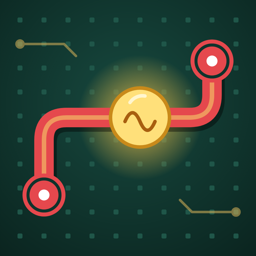

Wirebench
Circuit puzzles you solve by drawing. Close the circuit, light every bulb, use the least copper.
Support
Found a bug or have an idea? Email cpdigicomm@gmail.com and include your iPhone model and iOS version.
How to play
1. Connect the terminals. Drag from a terminal to the one with the same color and shape. Wires can't cross, except straight over a bridge plate.
2. Light every bulb. A bulb lights only when a wire runs through it and that wire's circuit is closed (both ends connected).
3. Save copper. Each board has a copper budget. Use the target amount or less for 3 stars. You never need to fill the board.
FAQ
Does it need internet?
No. All 150 boards and the Daily Circuits are on your phone. Ads only load when you happen to be online.
How do I unlock packs and wire styles?
Earn stars. Packs open at 10, 30, 55, 85 and 120 stars, and wire styles at 25, 60, 120 and 200. Replaying boards for 3 stars is the fastest way.
How do hints work?
A hint routes one wire for you. You start with 3 free hints. After that, you can watch a short video for another. If you're offline, hints are free.
Will I lose progress if I delete the app?
Yes. Progress is stored only on your device.